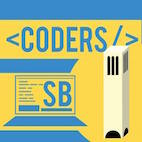

I am currently a third year Computer Science major at the University of California, Santa Barbara. I'm a student who is interested in exploring the world of development and seeing how I can apply what I learn from school into real life products.
When I'm not busy coding, I enjoy spending time with my friends, playing badminton, going to the gym, and eating food.
| As a developer intern, I worked with other employees and company client's to create applications and products to their specific needs. The languages and software andI utilized to achieve these goals include HTML/CSS, Javascript, sql, .NET, C#, Java, and more. | |
|  | I am a founding member and vice president of Coders SB, a relatively new and upcoming computer science club at UCSB. Our goal with Coders SB has been to help expose students to the tech industry, and equip them with the knowledge needed to complete their own projects and work at their dream company. |
| I was a technology consultant and provided troubleshooting to all computer related problems at the computer labs and instructional buildings at UCSB. |